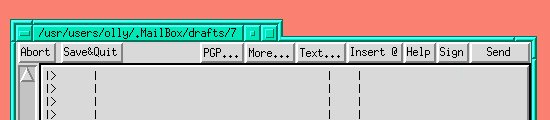

David Mosberger-Tang <davidm_at_AZStarNet.com> writes:
|>
|> Yes, that's exactly what I'm using it for. My typical layout consists
|> of about half a dozens xterms and one emacs window spread along the
|> screen bottom. Graphically, it looks something like this (assuming
|> xterm1 is on top of the other xterms and emacs is on top of xterm4):
|>
|> +--------+ +--------+ +--------+ +--------+ +--------+
|> | xterm1 | | xterm2 | | xterm3 | | xterm4 | | emacs |
|> +--------+-----------------------------+--+-+--------+-------//
|> | | |
|> | | |
|> | | |
|> | | |
|> | | |
|> | | |
|> +--------------------------------------+----+---------------//
|>
|> Thus, the tabs give direct access to any window. With full title
|> bars, the above configuration would imply that xterm2 and xterm3 would
|> be hidden behind xterm1.
It's easy to see what benefit this would have to people adopting this style
of layout.
However, I have a few points/questions:
1. How would you handle the identification of sticky windows? If you
squeeze the title bar real tight, they'll be no room left for the
stripes. I guess you could add a few pixels either side and stripe
those.
2. Don't you think it may look a little silly with fvwm's mwm-style 3d
borders. twm has very simple window decorations and I agree that this
type of title suits it well. I thought it would so I got out my trusty
gif editor (xpaint) and modified a current window grab. I've included
the result at the end of this message. It doesn't look as bad as I
thought it would, but I still don't know whether I like it.
3. Looking at the fvwm code, it would probably require a bunch more windows
(internal windows, not user windows) to model this. That would add a
fair overhead per user window which would increase the footprint of
fvwm. I think that twm's simplistic styling avoids much of this and
so can get away with it.
Olly
--
To unsubscribe from the list, send "unsubscribe fvwm" in the body of a
message to majordomo_at_hpc.uh.edu.
To report problems, send mail to fvwm-owner_at_hpc.uh.edu.

(image/gif attachment: 01-part)
Received on Tue Feb 06 1996 - 15:37:18 GMT